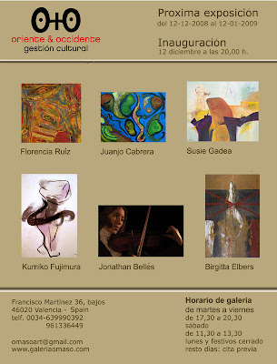

Exposición del 12-12-2008 al 12-01-2009
viernes, 12 de diciembre de 2008
{kind=link}

EXPOSICIÓN COLECTIVA O+O: JONATHAN BELLES, KUMIKO FUJIMURA, BIRGITTA ELBERS, JUANJO CABRERA, SUSIE GADEA Y FLORENCIA RUIZ.
Con esta exposición colectiva formada por las obras de los artistas Jonathan Belles, Kumiko Fujimura, Birgitta Elbers, Juanjo Cabrera, Susie Gadea y Florencia Ruiz, la Galería O+O cierra este año y da la bienvenida a 2009. Para Oriente & Occidente este año 2008 ha servido para consolidarse en la gestión cultural. Un periodo en el que se han realizado ocho exposiciones en la Galería O+O, tres de ellas individuales; exposiciones internacionales en Italia, Pekín y Taiwán; se ha participado en las ferias de arte contemporáneo de Italia, Pekín y Shanghai; sin olvidar la labor realizada en pro de la formación y divulgación con cursos, conferencias y publicaciones.
Que mejor forma de celebrar este exitoso año que con una gran exposición colectiva como la que nos acompañará en nuestra sede de Valencia hasta el 12 de enero de 2009. Seis artistas cosmopolitas que han vivido y se han formado en diferentes países de oriente y occidente, como Italia, Australia, Argentina, Alemania, Japón, Holanda, Perú, España, etc.; compartirán sus obras del 12 de diciembre de 2008 al 12 de enero de 2009 en esta muestra.
Juanjo Cabrera nos invita a nadar en su mar pictórico junto a multitud de elementos de vivos colores. Mientras que Kumiko Fujimura nos anima a danzar con sus figuras vaporosas una danza oriental. Birgitta Elbers y Susie Gadea nos muestran un mundo de abstracciones caracterizado por un juego poético de contrates y múltiples sentimientos. La obra de Florencia Ruiz nos habla de la naturaleza y de la transformación que está sufriendo. Y por último, música y video se unen en la obra de Jonathan Belles para dibujar la vida del compositor J. M. Gomis.
{kind=link}
{kind=link}
JONATHAN BELLES
París 1831, será la segunda proyección de video de Jonathan Belles en O+O, tras la presentación de “Quadres Melancòlics” en septiembre. París 1831 es una obra del joven cineasta Jonathan Bellés y el compositor Miquel Àngel Múrcia que trata sobre la vida del compositor romántico Joseph Mercior Gomis. En busca de una recuperación de la figura del compositor español, este proyecto audiovisual se adentra en un momento vital de la vida de Gomis, donde convergen el miedo, la soledad, el anhelo, la obsesión, la melancolía y la frustración. El hilo conductor del film será una composición en la que el músico está absorto y que da el compás de la música que nos invita a bucear en sus recuerdos. Grabado a caballo entre diversas ciudades valencianas, la música y la imagen se funden en un mundo nuevo, un sueño, una nueva metamorfosis. La duración aproximada de la obra es de ocho minutos. En cuanto a los personajes que aparecen a lo largo de la historia son el mismo Gomis, interpretado por la actriz Martina Julve, familiares, clérigos y el amor del compositor. esión, la melancolía y la frustración. El hilo conductor del film será una composición en la que el músico está absorto y que da el compás de la música que nos invita a bucear en sus recuerdos. Grabado a caballo entre diversas ciudades valencianas, la música y la imagen se funden en un mundo nuevo, un sueño, una nueva metamorfosis. La duración aproximada de la obra es de ocho minutos. En cuanto a los personajes que aparecen a lo largo de la historia son el mismo Gomis, interpretado por la actriz Martina Julve, familiares, clérigos y el amor del compositor.
París 1831, será la segunda proyección de video de Jonathan Belles en O+O, tras la presentación de “Quadres Melancòlics” en septiembre. París 1831 es una obra del joven cineasta Jonathan Bellés y el compositor Miquel Àngel Múrcia que trata sobre la vida del compositor romántico Joseph Mercior Gomis. En busca de una recuperación de la figura del compositor español, este proyecto audiovisual se adentra en un momento vital de la vida de Gomis, donde convergen el miedo, la soledad, el anhelo, la obsesión, la melancolía y la frustración. El hilo conductor del film será una composición en la que el músico está absorto y que da el compás de la música que nos invita a bucear en sus recuerdos. Grabado a caballo entre diversas ciudades valencianas, la música y la imagen se funden en un mundo nuevo, un sueño, una nueva metamorfosis. La duración aproximada de la obra es de ocho minutos. En cuanto a los personajes que aparecen a lo largo de la historia son el mismo Gomis, interpretado por la actriz Martina Julve, familiares, clérigos y el amor del compositor. esión, la melancolía y la frustración. El hilo conductor del film será una composición en la que el músico está absorto y que da el compás de la música que nos invita a bucear en sus recuerdos. Grabado a caballo entre diversas ciudades valencianas, la música y la imagen se funden en un mundo nuevo, un sueño, una nueva metamorfosis. La duración aproximada de la obra es de ocho minutos. En cuanto a los personajes que aparecen a lo largo de la historia son el mismo Gomis, interpretado por la actriz Martina Julve, familiares, clérigos y el amor del compositor.
KUMIKO FUJIMURA
La obra de la japonesa Kumiko Fujimura explora los principios artísticos orientales y occidentales, aunque su pintura se basa en la caligrafía oriental clásica, vemos como estos grafismos siempre estáticos, son sustituidos por pinceladas llenas de movimiento. Atraída por las figuras femeninas, muestra delicados y sinuosos contornos que parecen evaporarse frente a nosotros. Un juego de manchas de color pastel unidas de forma delicada por trazos de pincelada negra. Una insinuación de figuras ondulantes que se mueven de forma sugerente y rítmica. Fujimura ha desarrollado la mayor parte de su trayectoria como artista en Japón, destacando en sus pinturas la sutileza, elegancia, sensibilidad y espontaneidad oriental. Una obra fruto de un profundo estudio y disciplinado trabajo, al que se suma el gusto por el movimiento y la Naturaleza. Claros ecos de la tradición pictórica y caligráfica japonesa tanto en lo que se refiere a las técnicas como a los recursos expresivos. Una importante parte de la producción artística de Fujimura se desarrolla en el campo del sumi-e, pintura a la tinta china.
La obra de la japonesa Kumiko Fujimura explora los principios artísticos orientales y occidentales, aunque su pintura se basa en la caligrafía oriental clásica, vemos como estos grafismos siempre estáticos, son sustituidos por pinceladas llenas de movimiento. Atraída por las figuras femeninas, muestra delicados y sinuosos contornos que parecen evaporarse frente a nosotros. Un juego de manchas de color pastel unidas de forma delicada por trazos de pincelada negra. Una insinuación de figuras ondulantes que se mueven de forma sugerente y rítmica. Fujimura ha desarrollado la mayor parte de su trayectoria como artista en Japón, destacando en sus pinturas la sutileza, elegancia, sensibilidad y espontaneidad oriental. Una obra fruto de un profundo estudio y disciplinado trabajo, al que se suma el gusto por el movimiento y la Naturaleza. Claros ecos de la tradición pictórica y caligráfica japonesa tanto en lo que se refiere a las técnicas como a los recursos expresivos. Una importante parte de la producción artística de Fujimura se desarrolla en el campo del sumi-e, pintura a la tinta china.
BIRGITTA ELBERS
Nacida en Alemania Birgitta Elbers se traslada a Valencia en 2003. Sus estudios los realiza en Holanda y en la Facultad de Bellas Artes de Valencia, exponiendo más tarde en Austria, Holanda, Alemania y Valencia. Su producción artística cuenta con un línea abstracta pero también figurativa, ambos caminos tienen un mismo fin: expresar los sueños, vivencias y estado personal de Birgitta. Un tema recurrente en su pintura es la figura de la enfermera que nos mira de forma directa y misteriosa, una obra repleta de simbolismo donde diferentes signos como la cruz se presentan ante nosotros. En sus composiciones abstractas siempre suele destacar un elemento central que toma protagonismo. Un trabajo artístico en forma de narraciones de la historia personal de su creadora. personal de su creadora.
Nacida en Alemania Birgitta Elbers se traslada a Valencia en 2003. Sus estudios los realiza en Holanda y en la Facultad de Bellas Artes de Valencia, exponiendo más tarde en Austria, Holanda, Alemania y Valencia. Su producción artística cuenta con un línea abstracta pero también figurativa, ambos caminos tienen un mismo fin: expresar los sueños, vivencias y estado personal de Birgitta. Un tema recurrente en su pintura es la figura de la enfermera que nos mira de forma directa y misteriosa, una obra repleta de simbolismo donde diferentes signos como la cruz se presentan ante nosotros. En sus composiciones abstractas siempre suele destacar un elemento central que toma protagonismo. Un trabajo artístico en forma de narraciones de la historia personal de su creadora. personal de su creadora.
JUANJO CABRERA
Artista autodidacta que basa su lenguaje pictórico en composiciones de diferentes elementos tratados con vivos colores. Formas que nos recuerdan a elementos marinos dispersos por el lienzo, figuras rotundas con un gran fuerza, proporcionada por sus vivos colores y sus contornos marcados en negro. Imágenes que flotan en fondos azules como si de moléculas se tratara, una sensación envolvente y serena como la de un océano. Muchos de estos elementos utilizados por Juanjo Cabrera nos recuerdan a esas mutaciones de la realidad del maestro Miró. Un azul intenso, seductor y luminoso que evoca al mar inmenso, inundando al espectador, donde manchas de vivos rojos, verdes y amarillos jalonan el lienzo, dejando una interpretación libre al que contempla la obra. El resultado es un obra enigmática, ajena y con encanto. Un trabajo pictórico que se encuentra en la dicotomía entre abstracción y pintura figurativa, donde el espectador tiene la última palabra.
Artista autodidacta que basa su lenguaje pictórico en composiciones de diferentes elementos tratados con vivos colores. Formas que nos recuerdan a elementos marinos dispersos por el lienzo, figuras rotundas con un gran fuerza, proporcionada por sus vivos colores y sus contornos marcados en negro. Imágenes que flotan en fondos azules como si de moléculas se tratara, una sensación envolvente y serena como la de un océano. Muchos de estos elementos utilizados por Juanjo Cabrera nos recuerdan a esas mutaciones de la realidad del maestro Miró. Un azul intenso, seductor y luminoso que evoca al mar inmenso, inundando al espectador, donde manchas de vivos rojos, verdes y amarillos jalonan el lienzo, dejando una interpretación libre al que contempla la obra. El resultado es un obra enigmática, ajena y con encanto. Un trabajo pictórico que se encuentra en la dicotomía entre abstracción y pintura figurativa, donde el espectador tiene la última palabra.
SUSIE GADEA
Susie Gadea nacida en Lima (Perú) ha residido en Australia, la República Dominicana y Madrid, mientras se formaba y trabajaba en el ámbito del diseño gráfico, la comunicación, la psicología y el arte. Sus obras se encuentran en colecciones privadas de Estados Unidos, España, Austria, Corea, Australia, Colombia, Uruguay, Perú y República Dominicana. Su pintura de sugerentes colores están formadas por estructuras abstractas de cromatismo elegante y con una gran diversidad de tonos y matices. Simbolismos abstractos repletos de sutiles metáforas, una luminosa recolección de emociones y visiones íntimas. Un obra de gran carga espiritual que se nutre del lenguaje de Kandinsky para crear imágenes poéticas de gran limpieza y unidad estilística, para hablarnos de sentimientos y de crecimiento espiritual.
Susie Gadea nacida en Lima (Perú) ha residido en Australia, la República Dominicana y Madrid, mientras se formaba y trabajaba en el ámbito del diseño gráfico, la comunicación, la psicología y el arte. Sus obras se encuentran en colecciones privadas de Estados Unidos, España, Austria, Corea, Australia, Colombia, Uruguay, Perú y República Dominicana. Su pintura de sugerentes colores están formadas por estructuras abstractas de cromatismo elegante y con una gran diversidad de tonos y matices. Simbolismos abstractos repletos de sutiles metáforas, una luminosa recolección de emociones y visiones íntimas. Un obra de gran carga espiritual que se nutre del lenguaje de Kandinsky para crear imágenes poéticas de gran limpieza y unidad estilística, para hablarnos de sentimientos y de crecimiento espiritual.
FLORENCIA RUIZ
La artista Florencia Ruiz (Argentina, 1976) toma su inspiración de sus raíces y de la percepción de lo que la rodea. Su vida y obra, ligada a la naturaleza, se ha desarrollado en Argentina, Bologna (Italia) y Valencia, donde reside desde el año 2000. Tras una búsqueda incesante de estilo artístico, su obra termina inclinándose hacia la relación del ser humano y el medio ambiente. En su pintura podemos ver reflejados los sueños y las imágenes del subconsciente, como en su serie Psicodelia,o como en su serie Reciclados y familia se fusionan materias recicladas y pintura dando vida a objetos antiguos y ropa usada. En su última búsqueda hacia una pintura social, inspirada en los muralistas mexicanos, describe la lucha de los trabajadores de la tierra (serie Campesinos), la irrefrenable tecnología y el cambio climático (serie Verde) y demás injusticias. Una pintura orgánica llena de luz y color que navega entre la realidad y la fantasía. reflejados los sueños y las imágenes del subconsciente, como en su serie Psicodelia,o como en su serie Reciclados y familia se fusionan materias recicladas y pintura dando vida a objetos antiguos y ropa usada. En su última búsqueda hacia una pintura social, inspirada en los muralistas mexicanos, describe la lucha de los trabajadores de la tierra (serie Campesinos), la irrefrenable tecnología y el cambio climático (serie Verde) y demás injusticias. Una pintura orgánica llena de luz y color que navega entre la realidad y la fantasía.
La artista Florencia Ruiz (Argentina, 1976) toma su inspiración de sus raíces y de la percepción de lo que la rodea. Su vida y obra, ligada a la naturaleza, se ha desarrollado en Argentina, Bologna (Italia) y Valencia, donde reside desde el año 2000. Tras una búsqueda incesante de estilo artístico, su obra termina inclinándose hacia la relación del ser humano y el medio ambiente. En su pintura podemos ver reflejados los sueños y las imágenes del subconsciente, como en su serie Psicodelia,o como en su serie Reciclados y familia se fusionan materias recicladas y pintura dando vida a objetos antiguos y ropa usada. En su última búsqueda hacia una pintura social, inspirada en los muralistas mexicanos, describe la lucha de los trabajadores de la tierra (serie Campesinos), la irrefrenable tecnología y el cambio climático (serie Verde) y demás injusticias. Una pintura orgánica llena de luz y color que navega entre la realidad y la fantasía. reflejados los sueños y las imágenes del subconsciente, como en su serie Psicodelia,o como en su serie Reciclados y familia se fusionan materias recicladas y pintura dando vida a objetos antiguos y ropa usada. En su última búsqueda hacia una pintura social, inspirada en los muralistas mexicanos, describe la lucha de los trabajadores de la tierra (serie Campesinos), la irrefrenable tecnología y el cambio climático (serie Verde) y demás injusticias. Una pintura orgánica llena de luz y color que navega entre la realidad y la fantasía.